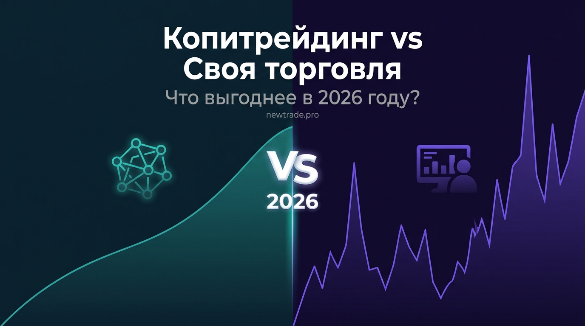

Копитрейдинг vs самостоятельная торговля: что выгоднее в 2026 году

Этот вопрос звучит в каждом втором разговоре о крипторынке: «Лучше копировать опытного трейдера или торговать самому?» Одни говорят, что копитрейдинг — это «пассивный доход для ленивых». Другие убеждены, что без самостоятельной торговли настоящего заработка не видать. Оба лагеря правы — и оба ошибаются.
Правда в том, что это не соревнование. Это два разных инструмента для разных людей, разных целей и разных этапов жизни. И чтобы выбрать подходящий — нужно честно ответить не на вопрос «что лучше?», а на вопрос «что лучше для меня прямо сейчас?»
В этой статье разберём оба подхода по двенадцати параметрам, развенчаем главные мифы, разберём конкретные сценарии — и покажем, почему лучший ответ часто лежит посередине.
Копитрейдинг и самостоятельная торговля — не альтернативы, а инструменты с разными задачами. Правильный вопрос не «что выгоднее», а «что подходит под мой опыт, время и цели». Ответ на него — в этой статье.
Сравнение по 12 параметрам: полная картина
Начнём с честного и детального сравнения. Никакого маркетинга — только факты.
| Параметр | Копитрейдинг | Самостоятельная торговля |
|---|---|---|
| Порог входа по знаниям | Минимальный — достаточно понять, как выбрать мастера | Высокий — ТА, ФА, риск-менеджмент, психология |
| Время в день | 5–20 минут (мониторинг) | 2–6 часов (анализ + ожидание + сделки) |
| Срок до первой прибыли | 1–2 дня после подключения | 6–18 месяцев обучения до стабильного результата |
| Потенциал доходности | Ограничен стратегией мастера (5–30% в мес.) | Неограничен при наличии опыта |
| Контроль над решениями | Ограниченный — зависите от мастера | Полный — каждое решение ваше |
| Психологическая нагрузка | Низкая — вы наблюдатель, а не исполнитель | Высокая — каждая сделка эмоционально нагружает |
| Риск ошибки | Ошибка мастера или неправильный его выбор | Собственные ошибки |
| Масштабируемость | Легко — добавляете капитал или мастеров | Сложно — результат зависит от вас |
| Обучающий эффект | Низкий — вы наблюдаете, но не анализируете | Высокий — каждая ошибка учит |
| Зависимость от рынка | Есть, но мастер хеджирует риски | Есть, но опытный трейдер управляет гибко |
| Минимальный капитал | От $200–300 | От $500–1000 |
| Доступность 24/7 | Полная — копирование работает без вас | Требует присутствия или бота |
Мифы и реальность: разбираем заблуждения
Вокруг обоих подходов накопилось множество мифов — и они мешают принять взвешенное решение.
Мифы о копитрейдинге
«Копитрейдинг — это пассивный доход. Подключился и забыл»
Это делегирование торговых решений, а не автопилот. Нужно регулярно мониторить мастера, оценивать результаты и менять стратегию при изменении рынка. 15–30 минут в неделю — минимум.
«Копитрейдинг — только для ленивых, которые не хотят учиться»
Многие профессиональные инвесторы используют копитрейдинг для диверсификации. Это рационально — делегировать то, в чём нет компетенции.
«Мастер с высоким ROI всегда хороший выбор»
Высокий краткосрочный ROI часто означает высокий риск. Стабильность на длинном горизонте важнее впечатляющих цифр за неделю.
Мифы о самостоятельной торговле
«Самостоятельная торговля всегда выгоднее — ты контролируешь каждую сделку»
Контроль имеет ценность только при наличии компетентности. Более 80% розничных трейдеров теряют деньги в первые 2 года.
«Научиться торговать можно за 2–3 месяца по YouTube»
Формирование стабильно прибыльной системы занимает в среднем 1,5–3 года. YouTube даёт знания, но не заменяет тысячи часов практики.
«Торговый робот решит проблему — автоматизирую и всё»
Робот исполняет стратегию, но не создаёт её. Без проверенной системы алгоритм автоматизирует убытки, а не прибыль.
5 сценариев: кому что подходит в 2026 году
Абстрактный ответ «что лучше» бесполезен. Полезен конкретный ответ под конкретную ситуацию.
Сценарий 1: Новичок без опыта
Портрет: Никогда не торговал. Хочет попробовать крипторынок. Есть $500 свободных средств.
Рекомендация: Копитрейдинг с консервативным мастером ($200–300) + параллельное обучение основам трейдинга. Капитал работает, пока вы учитесь.
Сценарий 2: Занятой профессионал
Портрет: Есть опыт инвестирования, но нет времени на активный трейдинг. Капитал $5 000–20 000.
Рекомендация: Копитрейдинг или торговый робот — идеальное решение. Профессионал анализирует мастеров по цифрам и логике, без эмоций.
Сценарий 3: Трейдер с 1–2 годами опыта
Портрет: Есть понимание рынка, но результат нестабилен.
Рекомендация: Гибридная модель: 70% капитала в самостоятельной торговле + автоматизация через бота, 30% в копитрейдинге для стабилизации.
Сценарий 4: Опытный трейдер
Портрет: 3+ года в трейдинге. Есть прибыльная стратегия.
Рекомендация: Стать мастер-трейдером на Bybit или автоматизировать стратегию. Масштабирование за счёт капитала подписчиков.
Сценарий 5: Инвестор с крупным капиталом
Портрет: Есть $50 000+. Хочет диверсифицированный доход.
Рекомендация: Портфельный подход: несколько мастеров (20–30% на каждого) + торговый робот (20–30%) + резерв в стейкинге.
Гибридная модель: лучшее из двух миров
Для большинства трейдеров с опытом от 6 месяцев оптимальный ответ — не «или/или», а «и то, и другое».
Пример распределения для трейдера с капиталом $5 000:
| Доля | Инструмент | Роль в портфеле |
|---|---|---|
| 40% | Копитрейдинг (консервативный мастер) | Стабильная база. Защита от просадки. |
| 40% | Копитрейдинг (умеренно агрессивный) | Потенциал роста без личного участия. |
| 20% | Собственные сделки | Обучение, развитие навыков, эксперименты. |
Реальные цифры: что показывает практика 2026 года
В 2026 году крипторынок стал более зрелым и конкурентным. Вот что показывает реальная практика:
Копитрейдинг: реалистичные ожидания
- Консервативные мастера: 3–8% в месяц. Просадка до 15%. Подходит для сохранения и умеренного роста капитала.
- Сбалансированные мастера: 8–20% в месяц. Просадка 15–25%. Основной рабочий диапазон для большинства копиров.
- Агрессивные мастера: 20–50%+ в месяц. Просадка 30–50%. Высокий риск — для опытных копиров.
Самостоятельная торговля: реалистичные ожидания
- Первый год: в среднем убыток 20–40% капитала. Это плата за обучение.
- Второй год: выход в безубыток или небольшой плюс. Формирование стабильной системы.
- Год 3+: стабильно прибыльные трейдеры показывают 20–60% годовых.
По данным исследований, стабильно прибыльными в течение 3+ лет остаются около 10–15% розничных трейдеров. Копитрейдинг позволяет участвовать в рынке, пока вы находитесь на пути к этим 10–15%.
Дорожная карта: как строить путь от новичка к профи
Если вы только начинаете — вот реалистичная временная шкала развития:
Изучение основ — ТА, риск-менеджмент, психология трейдинга. Потери на обучение — норма.
Первые стратегии, бэктест, Paper Trading. Начало понимания своего стиля.
Торговля с минимальным капиталом. Формирование стабильных правил входа/выхода.
Оптимизация стратегии, увеличение капитала, первые стабильные месяцы в плюс.
Масштабирование. Автоматизация через бота или собственный алгоритм.
Лучшие трейдеры, которых я знаю, начинали с копитрейдинга — не потому что не умели торговать, а потому что были достаточно умны, чтобы не рисковать капиталом, пока учились. Это не слабость. Это стратегия.
Когда переходить от копитрейдинга к самостоятельной торговле
Переход оправдан, когда выполнены конкретные условия:
- Вы понимаете рынок: умеете читать графики, понимаете влияние новостей, знаете базовые паттерны
- Есть протестированная стратегия: минимум 3–6 месяцев на Paper Trading или малом капитале с положительным результатом
- Есть психологическая устойчивость: серия из 5 убыточных сделок не заставит вас изменить правила
- Есть время: минимум 1–2 часа ежедневно для анализа и ведения журнала
- Есть раздельный капитал: торговые деньги не пересекаются с личными финансами
Вывод: честный ответ на главный вопрос
Копитрейдинг выгоднее, если у вас нет опыта, нет времени или вы на этапе обучения. Это рациональный способ участвовать в рынке без риска совершить все классические ошибки новичка.
Самостоятельная торговля выгоднее, если у вас есть проверенная система, психологическая устойчивость и достаточно времени. Потенциал выше — но путь длиннее и дороже.
Гибридная модель выгоднее всего для большинства — она даёт стабильность копитрейдинга, потенциал роста от собственных сделок и возможность развиваться без катастрофических потерь.
Не существует универсально «лучшего» подхода. Существует подход, который соответствует вашему уровню, вашему времени и вашим целям прямо сейчас. Честный ответ на этот вопрос — самое важное инвестиционное решение, которое вы можете принять.
Все три инструмента — в одном месте
На newtrade.pro вы найдёте всё для любого подхода: авторские индикаторы для TradingView, торговый робот для Bybit с проверенной стратегией и копитрейдинг с верифицированной статистикой.
Выбрать свой инструмент на newtrade.pro →